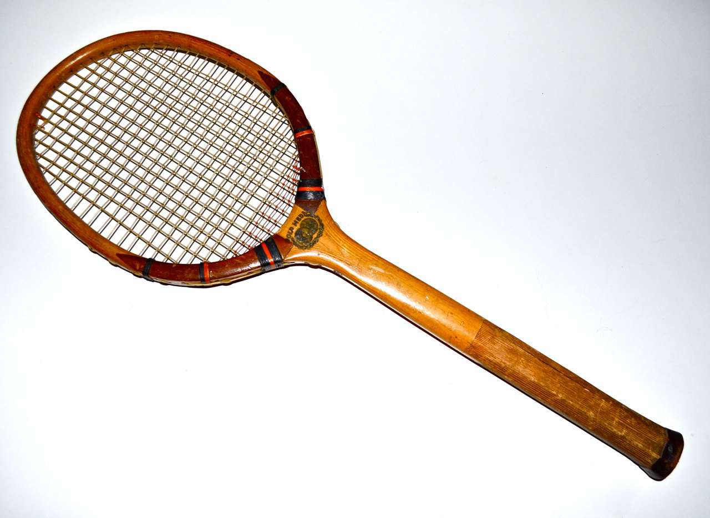

The medieval form of tennis, referred to as real tennis was played around the 12th century and constantly evolved over time which was about 3 centuries. The game initially started off hitting a ball with one's bare hand and then later moved to a glove, before finally using a racket to hit the ball. Real tennis is still a sport that is played especially in western Europe having a presence in England and France. The game was intorduced to the English royals in the 16th century where it finally exploded. They have courts at Lord’s cricket ground which is also known as the home of cricket and one of the more famous real tennis clubs. The picture on the right is the Real Tennis court that is present in the iconic Lord's cricket ground. I have been there myself and it is wonderful. They have a seating area for viewers on one side of the shorter side of the court where the players usually stand.
The Birth of Lawn Tennis occurred sometime in the 18th century. The game has been constantly evolving ever since. An example of this is back when tennis was a relatively new sport, wooden rackets were used but now rackets are mainly made of graphite as wood proved to show structural limitations that limited racket swings. A picture of a old school wooden tennis racket is depicted below. These rackets were always 27 inches long and 9 inches wide. There is a slight difference in today's racket. They are still normally quite as long (27 inches) but are much wider. A lot of the rackets used on the pro circuit today are 10 to 12 inches wide. These rackets are also a lot lighter, due to their graohite material as compared to the old wooden versions. This led to the generation of topsin as players were able to swing their rackets faster, fast forward to today - all players on the circuit use topsin becuase not doing so will put you at a disadvtange. The player who generates the most amount of topsin on an average Rafael Nadal.
The majors which we also know as the prestigious Grand Slams, also started in the early years of the sport. The earliest of which was Wimbledon wwhich started in 1877 and the latest opf the four, the Australian Open had its first tournament in 1905. It was mainly just an amateur sport until 1926 which is when the first professional tour would take place. The sport also offered no prize money in its inital years. But now, top players are very likely millionaires. Fast forward to now, with the rise of young athletes and the end of the era of the big 3 which consisted of Roger Federer, Rafael Nadal, and Novak Djokivic, the future of the sport looks bright with the rise of players like Corlas Alcaraz, Jannik Sinner, and the younger Holger Rune.